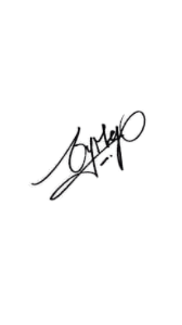

My Profile
My name is Phalla Suong. I am the one who is the owner of this
Website. I am from Kampong Speu Province. I am from the poor family that my Parents work as a Farmer and
my Sister works as a Factory Worker. My family depends on them. Tbey are my hero. For studying I just
finished high school at my hometown and now I continue to study in one Organization in Phnom Penh called
"PNC". I have left my family around 1 year in studying on Information Technology skill. My favorite
activities are Riding Bike, Recovery new Things, Joing Events even Small or Big, Being a Volunteer in
society's work, and Collaboration with Others. I am the first
year student in Passerellesnumeriques Cambodia. Through this Website you can learnt more and more
related to my life in IT skill. This will provide
you some bright especially for those who comes from the poor family, do not have enough financial to
continue in University life, ... . Also other information about PNC too. Helping you clearly to know
about PNC organization. Getting some cheer up knowledges, finding school to continue.

Mr. PHALLA SUONG